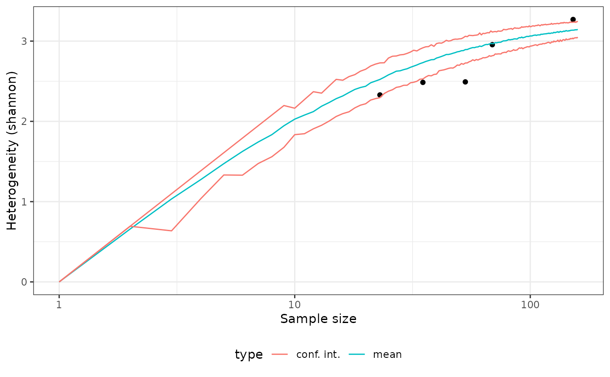
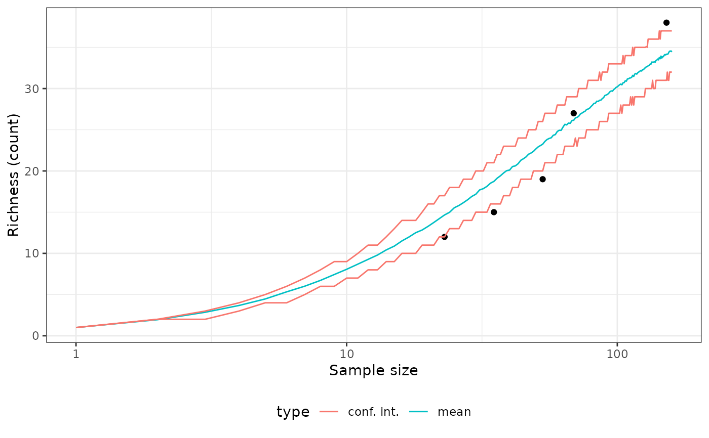

Measure Diversity by Comparing to Simulated Assemblages
Source:R/AllGenerics.R, R/index_diversity.R
simulate.RdMeasure Diversity by Comparing to Simulated Assemblages
Arguments
- object
A DiversityIndex object.
- n
A non-negative
integergiving the number of bootstrap replications.- step
An
integergiving the increment of the sample size.- interval
A
characterstring giving the type of confidence interval to be returned. It must be one "percentiles" (sample quantiles, as described in Kintigh 1984; the default), "student" or "normal". Any unambiguous substring can be given.- level
A length-one
numericvector giving the confidence level.- progress
A
logicalscalar: should a progress bar be displayed?
Value
Returns a DiversityIndex object.
References
Baxter, M. J. (2001). Methodological Issues in the Study of Assemblage Diversity. American Antiquity, 66(4), 715-725. doi:10.2307/2694184 .
Kintigh, K. W. (1984). Measuring Archaeological Diversity by Comparison with Simulated Assemblages. American Antiquity, 49(1), 44-54. doi:10.2307/280511 .
See also
Other diversity measures:
heterogeneity(),
occurrence(),
plot_diversity,
rarefaction(),
richness(),
similarity(),
turnover()
Examples
# \donttest{
data("cantabria")
## Assemblage diversity size comparison
## Warning: this may take a few seconds!
h <- heterogeneity(cantabria, method = "shannon")
h_sim <- simulate(h)
plot(h_sim)

r <- richness(cantabria, method = "count")
r_sim <- simulate(r)
plot(r_sim)

# }